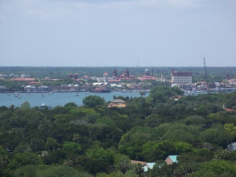
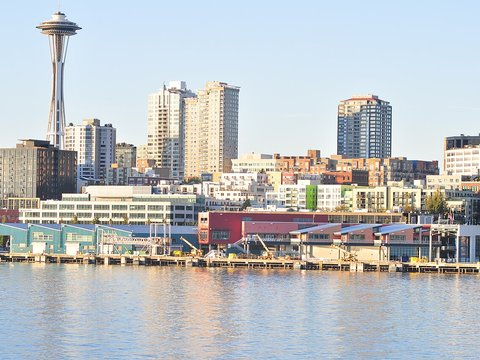
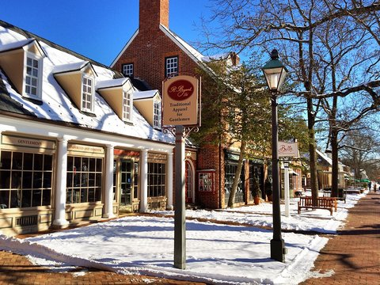
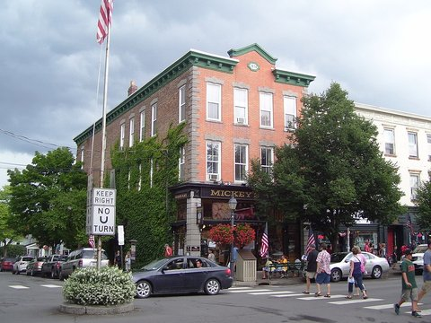

Build your own trip
Start from your home airport, choose your first stop from any of our destinations, then add stops one at a time. Every leg shows distance, time and fuel for your airplane.
Pick your start date and aircraft first. Your trip link keeps every choice, so you can share it or come back to it later.
Or start from one of our routes
Open one, then swap stops, change nights or add stops to make it yours.
 The Northeast in a week7 nights · Cape May → Newport → Nantucket → Bar Harbor → StoweAbout 670 nm between stopsSeven nights by air: Cape May’s Victorian beach town, Newport’s mansions, Nantucket, Acadia and Bar Harbor, then Stowe in the Green Mountains.
The Northeast in a week7 nights · Cape May → Newport → Nantucket → Bar Harbor → StoweAbout 670 nm between stopsSeven nights by air: Cape May’s Victorian beach town, Newport’s mansions, Nantucket, Acadia and Bar Harbor, then Stowe in the Green Mountains.
 The Carolina and Georgia coast7 nights · Ocracoke Island → Southport → Charleston → Beaufort → SavannahAbout 318 nm between stopsSeven nights down the coast: Ocracoke’s island airstrip, Southport and Bald Head Island, Charleston, Beaufort and Savannah’s squares.
The Carolina and Georgia coast7 nights · Ocracoke Island → Southport → Charleston → Beaufort → SavannahAbout 318 nm between stopsSeven nights down the coast: Ocracoke’s island airstrip, Southport and Bald Head Island, Charleston, Beaufort and Savannah’s squares.

Florida, coast to Keys7 nights · St. Augustine → Sanibel → Key West → Islamorada → Palm BeachAbout 490 nm between stopsSeven nights around Florida: St. Augustine’s old town, Gulf beaches on Sanibel, Naples, Key West and Islamorada, home by way of Palm Beach. Florida, the long way: Keys to Panhandle9 nights · St. Augustine → Palm Beach → Key West → Islamorada → Sanibel → DestinAbout 859 nm between stopsNine nights around Florida: St. Augustine’s old town, Palm Beach, Key West and Islamorada, Gulf beaches on Sanibel, then Destin’s emerald water and Crab Island. The Colorado and Utah high country7 nights · Aspen → Telluride → Moab → Park City → Steamboat SpringsAbout 545 nm between stopsSeven nights in the mountains: Aspen, Telluride’s box canyon, the red rock of Moab, Park City and Steamboat Springs.
The Colorado and Utah high country7 nights · Aspen → Telluride → Moab → Park City → Steamboat SpringsAbout 545 nm between stopsSeven nights in the mountains: Aspen, Telluride’s box canyon, the red rock of Moab, Park City and Steamboat Springs.
 The California coast7 nights · San Diego → Santa Barbara → Paso Robles Wine Country → Monterey → NapaAbout 445 nm between stopsSeven nights up the coast: San Diego, Santa Barbara, Paso Robles wine country, Monterey and Carmel, and Napa and Sonoma.
The California coast7 nights · San Diego → Santa Barbara → Paso Robles Wine Country → Monterey → NapaAbout 445 nm between stopsSeven nights up the coast: San Diego, Santa Barbara, Paso Robles wine country, Monterey and Carmel, and Napa and Sonoma.
 The upper Great Lakes7 nights · Traverse City → Mackinac Island → Marquette → Bayfield → Door CountyAbout 526 nm between stopsSeven nights around Lake Michigan and Lake Superior: Traverse City, Mackinac Island, Marquette and Pictured Rocks, the Apostle Islands and Door County.
The upper Great Lakes7 nights · Traverse City → Mackinac Island → Marquette → Bayfield → Door CountyAbout 526 nm between stopsSeven nights around Lake Michigan and Lake Superior: Traverse City, Mackinac Island, Marquette and Pictured Rocks, the Apostle Islands and Door County.
 Texas Hill Country and the Gulf7 nights · Galveston → Round Top → Fredericksburg → Horseshoe Bay → San AntonioAbout 327 nm between stopsSeven nights in Texas: Galveston’s Victorian Strand, Round Top’s antiques, Fredericksburg’s wineries, a fly-in resort at Horseshoe Bay and San Antonio’s River Walk.
Texas Hill Country and the Gulf7 nights · Galveston → Round Top → Fredericksburg → Horseshoe Bay → San AntonioAbout 327 nm between stopsSeven nights in Texas: Galveston’s Victorian Strand, Round Top’s antiques, Fredericksburg’s wineries, a fly-in resort at Horseshoe Bay and San Antonio’s River Walk.
 Red rock and the high desert7 nights · Sedona → Grand Canyon South Rim → Santa Fe → Taos → AlbuquerqueAbout 519 nm between stopsSeven nights in Arizona and New Mexico: Sedona’s red rock, the Grand Canyon, Santa Fe’s plazas, Taos and Albuquerque.
Red rock and the high desert7 nights · Sedona → Grand Canyon South Rim → Santa Fe → Taos → AlbuquerqueAbout 519 nm between stopsSeven nights in Arizona and New Mexico: Sedona’s red rock, the Grand Canyon, Santa Fe’s plazas, Taos and Albuquerque.

Puget Sound to the Columbia Gorge7 nights · Seattle → San Juan Islands → Port Townsend → Willamette Valley Wine Country → Hood RiverAbout 341 nm between stopsSeven nights in Washington and Oregon: Seattle and the Museum of Flight, the San Juan Islands, Port Townsend, Willamette Valley wine country and Hood River.
Virginia, coast to Blue Ridge7 nights · Williamsburg → Chincoteague → Virginia Hunt Country → Charlottesville → Smith Mountain LakeAbout 348 nm between stopsSeven nights in Virginia: Colonial Williamsburg, Chincoteague’s wild ponies, Hunt Country wineries, Charlottesville and Monticello, and a Blue Ridge lake.
Upstate New York and the Finger Lakes7 nights · Cooperstown → Finger Lakes → Seneca Lake → Thousand Islands → Lake PlacidAbout 284 nm between stopsSeven nights upstate: Cooperstown and the Hall of Fame, Ithaca’s gorges, Belhurst Castle and the Seneca Lake wine trail, the Thousand Islands and Lake Placid.Before you go
Build in a weather day. Leave a spare day somewhere in the trip, and check each leg’s weather the day before you fly it.
These are planning estimates. Distances are straight lines, times assume no wind, and fuel-stop flags use your aircraft profile with its reserve, and suggested fuel stops come from FAA airport data, so call ahead to confirm fuel and hours. Check weather, NOTAMs, the chart supplement, airspace and performance for every leg. Nothing here is booked or confirmed.
About hotel links. “Compare hotels” links go to our partner Stay22 with your dates filled in. They are affiliate links: we may earn a commission at no cost to you. The hotels in each guide are our own picks and are never paid.